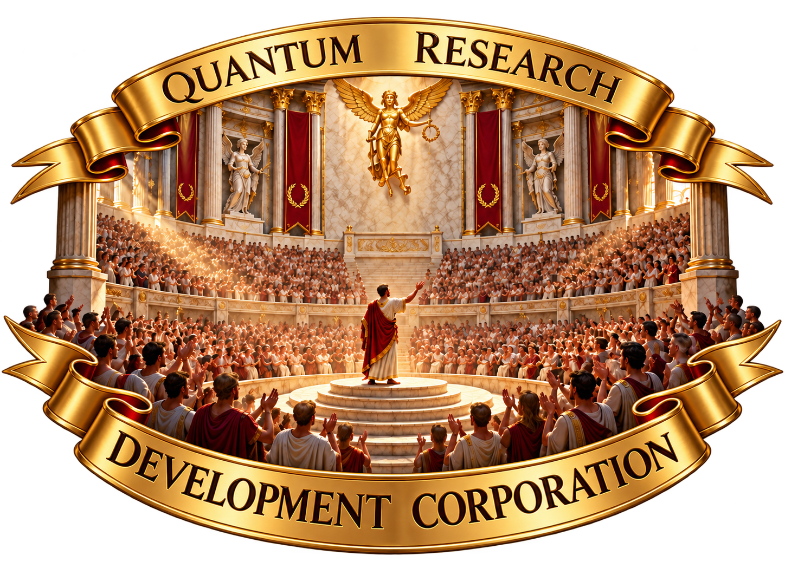

Welcome to Quantum Research Development !
This corporation will create a database.
The database is still in staging.
Feel free to explore the site.
Quantum Research Development is a Web Design and Front-End Construction Company.
